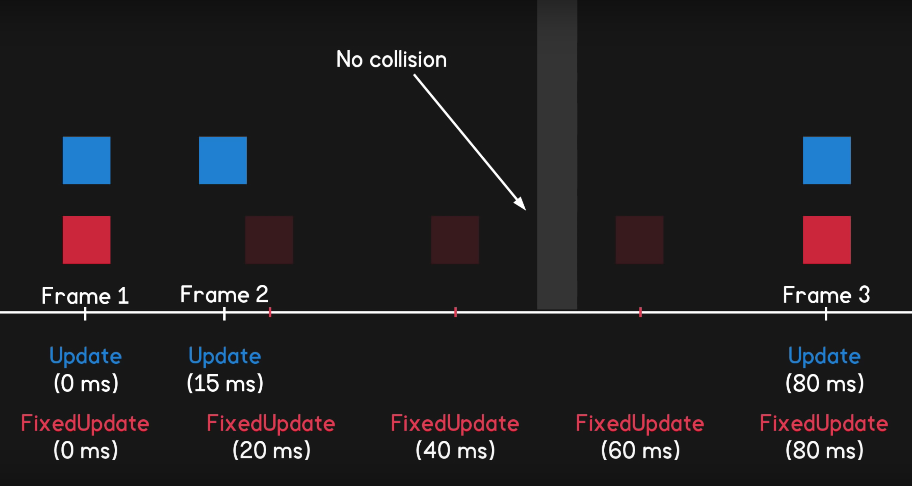

Game Development
Let there be light!
Just started making games in Unity. Oh this is so exciting! Source.
Rolling ball
PlayerCtrl.cs:
Camera offset
CameraCtrl.cs:
using UnityEngine;
using System.Collections;
public class CameraCtrl : MonoBehaviour {
public GameObject player;
private Vector3 offset;
// Use this for initialization
void Start () {
offset = transform.position - player.transform.position;
}
// LateUpdate is called once per frame after all other updates have finished
void LateUpdate () {
transform.position = player.transform.position + offset;
}
}If you move fast enough you can pass through walls
I wonder if the real world is like that.
[Image source: Sebastian Lague.]
Rigidbody collision and collecting coins